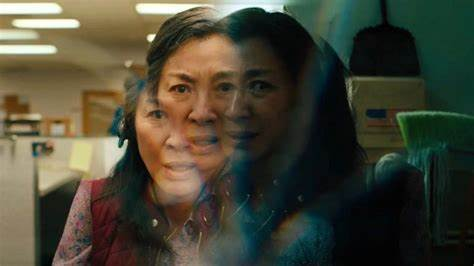
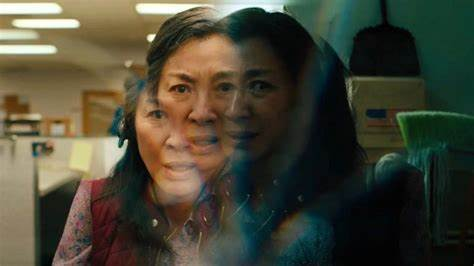

Todo a la vez en todas partes
Por Lucas Madera Rodríguez
*Advertencia: Esta páxina contén spoilers da película. Lee no teu propio risco
*Advertencia: Esta páxina contén spoilers da película. Lee no teu propio risco
"Todo a la vez en todas partes" (tamén coñecida coma Everything Everywhere All at Once)
é unha película estadounidense de 2022, de xéneros de
comedia negra, ciencia ficción, artes marcias e fantasía.
Foi dirixida por Daniel Kwain e Daniel Scheinert, os cales tamén escribiron o guión.
A película é protagonizada por Evelyn Quan (Interpretada por Michelle Yeoh), unha inmigrante china
que mentres lidia cos seus problemas familiares e a IRS
se ve involta nunha trama sobre universos paralelos, onde terá que
decidir sobre o seu destino e tentar salvar o multiverso.
A película tamén foi producida entre outros polos irmáns Joe e Anthony Russo. Ten unha duración de 2
horas e
20 minutos, e
cun presuposto de 25 millóns consegiu recaudar 103 millóns na taquilla global.
A película foi dirixida polos Daniels (Daniel Kwan e Daniel Scheinert), os cales teñen 34 e 35 anos
respectivamente.
O primeiro naceu en Massachusetts, mntres que o segundo é de Alabama. Coñeceronse cando estaban
estudando na Universidade
Emerson en Boston, e levan traballando na
industria da direción dende 2007. Tamén traballaron en varios vídeos musicais, coma o famoso "Turn Down
for What". En 2016
sacaron a súa primeira longametraxe, Swiss Army Man.
Tamén teñen traballado en varias series de televisión e a día de hoxe siguen en activo.
O film cunta cunha gran cantidade personaxes, os cales sempre cumpren un obxectivo na historia e teñen
un
obxectivo na narrativa
sen embargo os máis importantes son Evelyn e a súa familia.
Evelyn empeza a historia sendo unha persona miserable, odia a súa vida, resiente as súas decisións e ten
unha gran cantidade
de problemas coa súa familia. Na película recibe a
tecnoloxía para acceder ás habilidades de outras Evelyns do multiverso, dado que resulta que ela é a
versión que máis cousas ten
tentado aprender e fallado ao facelo, polo que ao transcurso da película ten que pasar de ser a peor
versión de si mesma á mellor e
aprender a valorar á súa familia, rematando asó co ciclo do odio no que estaba atrapada o principio

Waymond é o marido de Evelyn. Ao principio semella asustadizo e patético, segundo o punto de vista de
Evelyn, sobre todo
coa súa contraparte no multiverso, que é extremadamente capaz e confiable.
Sen embargo ao longo da película se nós demostra a verdadera coraxe e amabilidade de Waymond, que a
pesar de estar plantexandose o
divorcio loita por solucionar os problemas da súa familia. Tamén é un punto oposto a Evelyn, dado que
nas realidades nas que é máis "exitoso"
lamenta non poder ter estado con ela, dado que o Waymond da nosa realidade é feliz e fai o máximo que
pode da súa situación. Sendo un
perfeto oposto a Evelyn lamentando terse casado con el ao principio.
Joy (Tamén chamada Jobu Tupaki) é tecnicamente falando a antagonista da película. Isto debido a que unha
versión dunha realidade
alterna está tentando destruír o multiverso. A película trata moito sobre a relación entre Joy e
Evelyn,
e de como Evelyn debe rematar co ciclo do odio que ela sufriu e está continuando, para salvar así a
relación coa súa filla
e non rendirse con ela.
O esixente pai de Evelyn. Cando esta marchou de China con Waymond cortou o contacto con ela ata que non
se pode valer por
si mesmo e fai que cuide del en América. A súa versión doutra dimensión
tenta convencer a Evelyn de que mate a Joy para que Jobu Tupaki non poda usala coma ponte entre mundos,
mais esta se niega e
Gong Gong decide enfrentarse a ela sendo un antagonistapor boa parte da película.
As súas accións son gran parte dos catalizadores polos que acontecen moitos dos problemas,
polo que se pode decir que a súa intolerancia e medo son os verdadeiros villáns da película.

O concepto de Mapachui é introducido cando Evelyn tenta lembrarse da película de Ratatoui mais pensa que trataba dun mapache en vez dunha rata chamado Mapachui, ao principioisto semella que está feito para demostrar que a mente de Evelyn está sufrindo por viaxar entre dimensións, mais despois noutra dimensión na que Evelyn é unha cociñeira famosa se revela que o seu compañeiro ten un mapache debaixo do sombreiro de chef chamado Mapachui. Tamén cantan unha canción basada nas bandas sononoras de Pixar. Non é un personaxe moi importante mais é probablemente o chiste máis gracioso da película así que iso.
| Onde ver | Enlaces | Valoración | Prezo |
|---|---|---|---|
| Netflix | No dispoñible | ||
| Amazon Prime España | |||
| Amazon Prime UK | Enlace | 8,1 | 14€ |
| HBO MAX | Non dispoñible | ||
 

Aquí poderás por a túa opinión da película
Páxinas relacionadas coa película
Wikipedia Amazon Prime Rotten Tomatoes ImbdA banda sonora foi composta polo grupo experimental Son Lux, composto por Ryan Lott, Ian Chang e Rafiq Bhattia. Estos tres traballaron de forma tanto individual coma grupal para, tras tres anos de traballo, completar as 49 cancións que compoñen a banda sonora da película, que ten un total de 2 horas de duración. Tamén conta con outros artistas que traballaron nela, coma Randy Newman, Moses Sumney, etc.. O álbum da recopilatorio da banda sonora foi lanzado o 25 de Marzo, e tivo unha resposta positiva